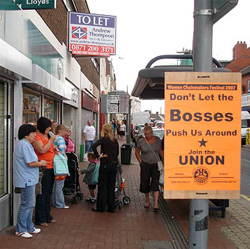

Cradley Heath's Women Chainmakers Strike: We all still have nothing to lose
Submitted on Sat, 09/15/2007 - 5:11am
The Women Chainmakers of Cradley Heath
The main industry of Cradley Heath during the industrial revolution was iron working, specifically chain making. In ‘’The White Slaves of England’’ Robert Sherard reminds us that 1,000 tons of chain was made in the Cradley Heath District each week.
He uses the word Slave advisedly for as he tells us, ‘chronic hunger can bind tighter than any iron link’. And chronic hunger was the lot of the women chain makers of Cradley Heath. Sherard tells us of the desperation of many of these wretched women working to within a few weeks of their confinement. Many of the women were over seventy and many younger than fifteen often working twelve plus hours a day. There is also reference made to a ‘’sweater’’, a kind of overseer who has ‘’never forged a link in her life and gets a good living’’.
In 1910 there were in all three thousand five hundred chain makers working in small shops. Two thirds of these workers were said to be women. There women workers were generally stopped from organising themselves and joining a union due to the very low wages they earned. They were faced with a choice between union dues or some bread for the table.
However in 1905 a Women’s Chain Making organisation was formed as part of the National Federation of Women Workers. The main mover in this federation was Mary Macarthur from Glasgow who was well known around the Black Country. Chain making in the Black Country received some attention from the government at this time. The idea being to regulate wages and ostensibly improve the lot of workers.
During the negotiations to establish a better wage the employers complained that higher wages would make them vulnerable to foreign competition and would encourage faster mechanisation thus the loss of jobs. Remember this being 1910 not 2007.
In the spring of 1910 a wage, mostly affecting the women workers, was agreed within the nationally organised board. The employers however almost immediately tried to wriggle out of their obligations and tried to find loopholes in the agreement. All sorts of dirty tricks were planned and implemented.
As a result of this treatment the women were galvanised into action and a mass meeting was organised. The women voted to ‘’come out and stay out’’. It was reported at the time that seven hundred women had ceased work.
Money had been collected at the time by well wishers which avoided the women being starved back to work. Even a big businessman like George Cadbury donated to the fund. Another donor to the fund was the Nobel Prize winning author of The Forsyte Saga, John Galsworthy. He wrote a report on the strike in a chapter of his book of essays ‘’ The Inn of Tranquillity’’. He calls the women. ’the chief guardians of the inherent dignity of man’.
The strike went on for ten weeks and resulted in the women securing victory. The money left over from the Strike fund was used to found The Workers Institute in Cradley Heath. The institute, built for the benefit of working people in the area was, as we know, moved in 2004 to make way for a road enabling easier access to a shopping centre.
The Women Chainmakers of Cradely Heath resistance to the Capitalist Class should never be forgotten. They are an inspiration to all workers fighting for a better tomorrow.
Let's Break These Chains
So what has changed for Cradley Heath since 1910? A.Denning seeks to explore the situation of our community in 2007
Ninety-seven years ago, seven hundred desperately poor and overworked women workers said enough is enough, stood up and took action to improve their lives. So what lesson is there for us in the 21st Century? Times have changed, our lives are much better now aren’t they?
Our New Labour rulers tell us things are getting better and better. True, we don’t starve living off the crumbs from bosses table but things haven’t changed in their basic nature.
When we hear the assortment of Pop stars, establishment union bureaucrats and celebrity politicians pontificating about the significance of the strike and gaining credence from their appearance we should remember a few things: those of us with a decent job in the Black Country aren’t as desperate as these women were but the fact remains if they take away our jobs we would be sunk. This in contrast to the above clowns who would not have too much hardship if they lost their jobs, even if they were working in ‘’proper’’ jobs anyway.
The next big employer in the Cradley Heath area is going to be Tesco, who are opening a giant store very soon. Four hundred people are going to be employed there, those lucky enough after the bowing and scraping to be done the ‘favour’ of being employed by Tesco of course. Hundreds of applicants were turned down this favour.
The work is going to be poorly paid, in unsocial hours and demanding. Unions are likely to be at best subtly discouraged and at worst crushed as is illustrated by the report in The Edinburgh News on 6.4.07:
‘’TESCO delivery drivers in the Lothians claim they have been threatened with the sack unless they agree to controversial new contracts. The drivers at the supermarket giant's distribution depot in Livingston are threatening strike action over proposed changes to their shifts and bonus payments for working unsocial hours. The company has sent out letters to staff asking them to sign up to the new terms by Wednesday next week. The terms are due to come into effect when it opens a new national distribution depot in the West Lothian town in July. The Transport and General Workers Union (T&G) said today it had been called by at least 12 drivers saying supervisors had warned them they would face the sack unless they signed up.”
Tony Trench, Edinburgh regional officer for the T&G, said, "A huge number phoned my office yesterday saying they have been threatened with dismissal if they didn't sign these documents”.
So would the new labour personalities talking at the Chainmakers festival be disapproving of this, given that their Party was established by the early trade unions? You must be joking. This from the Guardian of 28.6.07:
‘’Mr Gordon Brown said he was intent on using all available talent in his government and the talent he intends to tap for business advice includes Tesco's Sir Terry Leahy, Jean-Pierre Garnier of GlaxoSmithKline, Sir John Rose of Rolls-Royce, Stuart Rose of Marks & Spencer and controversial Permira private equity boss Damon Buffini’’.
So bear in mind when you hear the clowns preaching to us at the Women Chainmakers festival that these people have played, and continue to play, a full and enthusiastic part in the system. The system that exploited the women chainmakers so ruthlessly, continues to exploit their descendants today.
Whereas before, working people had to be satisfied with the crumbs from the bosses table. Now we have bigger crumbs and foreign holidays; widescreen TV’s and new cars to keep us happy. We still have to work for the profits of the bosses though and however many benefits we get they are dwarfed by the boss’s. Take away our ‘privilege’ of employment that these bosses grant us and where are we?
Even if we are better off than before, that’s no reason to give up the fight. Should you put up with someone stepping on your foot because before they had their knee on your throat?
There is enough of us and enough resources for all of us to have most of what we need. If everyone did a fair share of the necessary work, even the bosses, we would have plenty of time to pursue pleasurable activities. We could all have a place at the big table. There is no reason, given the right nurturing and encouragement why we could not all ‘manage’ ourselves. We don’t really need bosses, for sure we need experts but do we really need bosses to tell us, the ones actually doing the job, how to do the job?
If we could manage to carry out the work by ourselves for the real benefit of everyone then work would be less of a chore, just look at those working for hours in an allotment after a full days work.
No one should be satisfied with the crumbs from the self appointed masters table. We can all have a place at the table, and take a turn at the cooking and washing up. The ‘lucky’ four hundred about to be employed by Tesco, some of whom are going to be descendants of the striking chain makers, are going to be working for the minimum wage that Tesco are obliged to give them. All for the ultimate benefit, funnily enough, of some of the descendants of the bosses from 1910.
The workers institute, paid for by the proceeds of the strike fund is being rebuilt in the Black Country Museum, which some have called the ‘working class theme park’. The museum will be employing proud ex-industrial workers acting the part of proud industrial workers. You could vomit at the irony.
Now is the time ,again, to say enough is enough. Throw the boss off your back and think what would happen if the Worker Bees stop scurrying around fetching honey for the Queen Bee.
It must make sense to join a union or why else would the bosses, our natural predators, encourage us not to. Do Turkeys vote for Christmas?
Given the example of these women and the situation of the new employees of Tesco - doesn’t it make sense to join the One Big union? Fight back against the boss and take control of our lives? ‘’Every little helps’’ as they say at Tesco.
IWW West Midlands Branch
- e-mail: westmids@iww.org.uk
- Homepage: http://www.wmiww.org